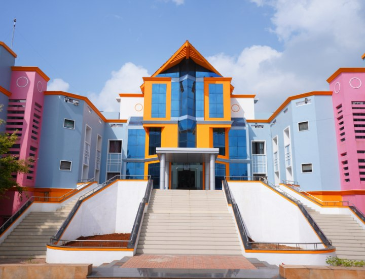

About Institution
Mailam Engineering College is a self-financing institution that was established in 1998 in Villupuram district. The college is approved by AICTE, New Delhi and affiliated to the Anna University, Chennai. It offers eight undergraduate courses and six postgraduate courses.
The college is located in a sprawling campus of 42 acres, which is beautifully landscaped and aesthetically elegant. The campus is also close to the Sri Subramania Swamy Koil and Sri Vakkarakali Amman koil, which provide a tranquil and pleasant atmosphere for the pursuit of technical education. Mailam Engineering College is one of the top engineering colleges in Villupuram district.